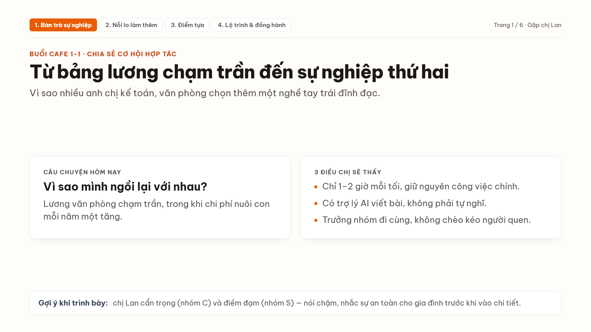
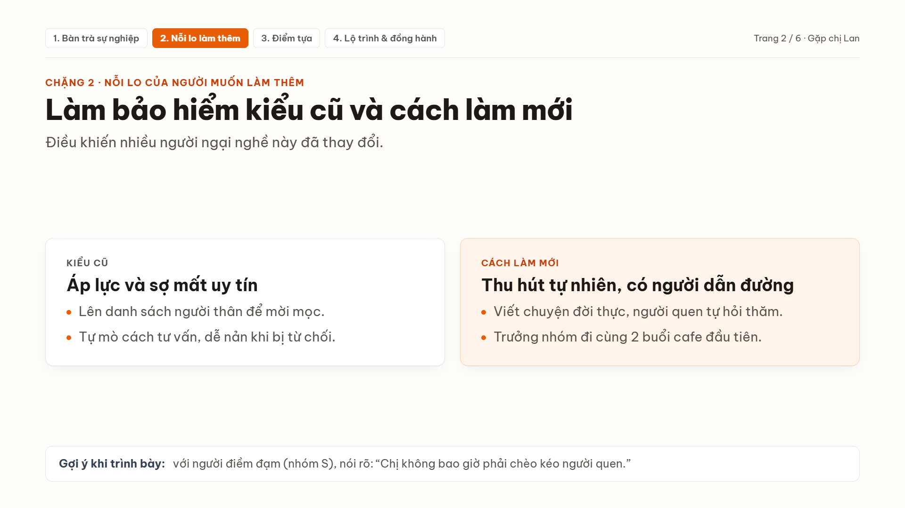
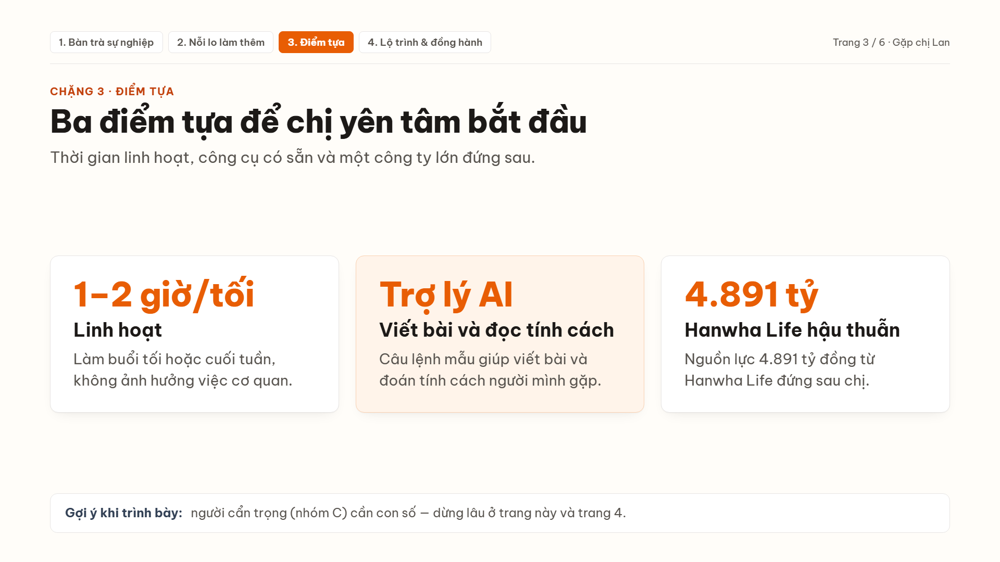
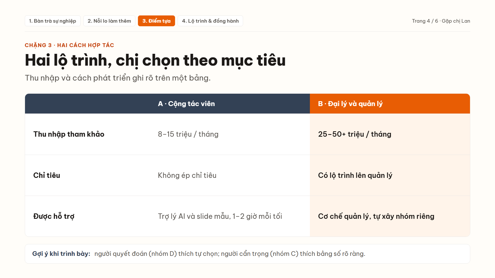
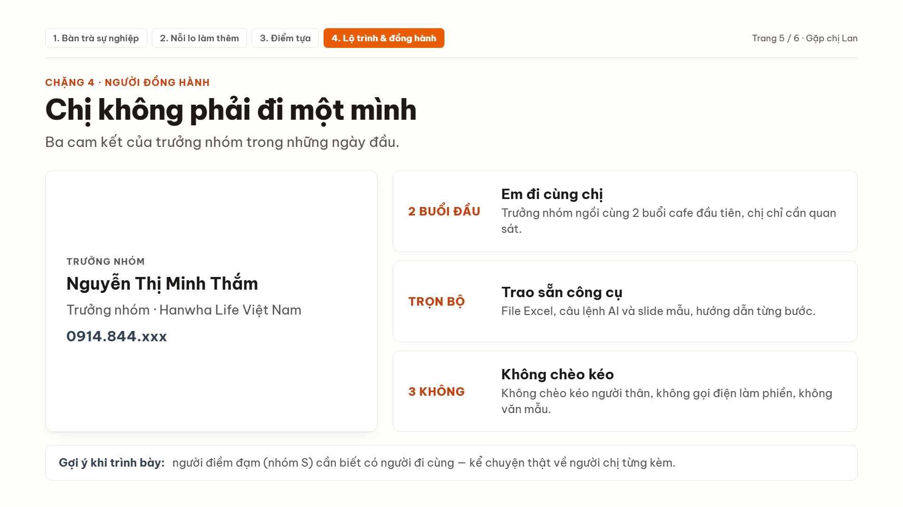
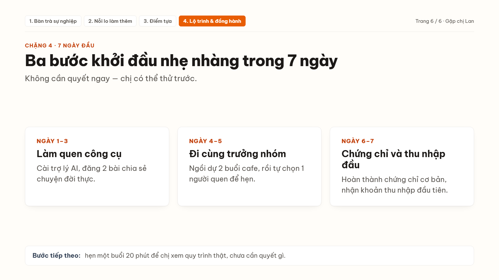

Dữ liệu thử lấy từ file Excel mẫu Buổi 2: 4 người muốn mời hợp tác và 3 khách hàng. Mỗi trang sau là một câu lệnh, đọc từ trái sang phải: điền gì vào → AI trả về gì → lần trước sai ở đâu và đã sửa câu lệnh thế nào.
Một đoạn văn mẫu có sẵn chỗ trống. Bạn điền thông tin người mình sắp gặp vào chỗ trống, dán vào ChatGPT hoặc Claude, rồi nhận kết quả.
Một người thường có 1 nhóm chính và 1 nhóm phụ, ví dụ C-S: cẩn trọng là chính, điềm đạm là phụ.
Biết người ta đang ở bước nào thì chỉ cần đưa họ lên bước kế tiếp, không vội.
1A lập dàn ý, 1B dựng thành slide. Chạy cho chị Lan (trang 1–6) và anh Long (trang 7–12).

Trang 1 · Câu chuyện mở đầu
Trang 2 · Kiểu cũ và cách làm mới
Trang 3 · Ba điểm tựa
Trang 4 · Hai lộ trình
Trang 5 · Người đồng hành
Trang 6 · 7 ngày đầu1. Trang 1–2 mở lời nhẹ nhàng kiểu Việt: Đạt · 2. 6 trang đủ 6 kiểu trình bày: Đạt · 3. Mỗi ý ≤ 22 chữ, tiêu đề ≤ 12 chữ: Đạt · 4. Số điện thoại chỉ ghi 1 lần (trang 5): Đạt · 5. Có gợi ý theo tính cách ở chân mỗi trang: Đạt.
Đoán người mình sắp gặp thuộc nhóm nào, rồi chọn cách mở lời và trang slide phù hợp.
Nhịp độ: điềm tĩnh, từ tốn. Bằng chứng: ít đăng bài, câu ngắn, gần như không dùng biểu tượng cảm xúc; tin nhắn mở đầu bằng một lời khen nhẹ nhàng.
Quan tâm: số liệu và chuẩn mực, xen gia đình. Bằng chứng: chia sẻ bài quyết toán thuế; tự nói “chỉ quen con số”; ảnh bìa là hai con.
→ Nhóm C là chính, S là phụ (C-S). Mức chắc chắn: khoảng 70%.
Câu hỏi kiểm chứng trong 2 phút đầu: “Cuối năm quyết toán chắc chị bận lắm, chị thường sắp xếp việc nhà với việc cơ quan thế nào ạ?”
Người cẩn trọng (C): dừng lâu ở trang 3 (điểm tựa) và trang 4 (bảng thu nhập). Người điềm đạm (S): trang 2 (không chèo kéo) và trang 5 (trưởng nhóm đi cùng).
Đầu ra số 1 của buổi học. Dán danh sách người quen vào, AI chọn ra ai cần gặp tuần này.
| Gặp ai, vì sao | Trao gì | Tiếp cận (tin nhắn · slide · tài liệu 1 trang) | Thế nào là thành công |
|---|---|---|---|
| 1. Chị Lan (UV-001)Mời hợp tác · C-S · bước 3 · hẹn sáng thứ 4 | Nghề tay trái 1–2 giờ/tối, thu nhập 8–15 triệu | Nhắn xác nhận hẹn sáng thứ 4 ở Cofeli Quán Sứ · Mở trang 2 và 5 · Để lại tờ tóm tắt cơ chế 1 trang | Chị đồng ý thử 7 ngày đầu |
| 2. Anh Huy (UV-003)Mời hợp tác · D · bước 3 · hẹn sáng thứ 5 | Lộ trình lên quản lý, 25–50+ triệu/tháng | Nhắn gửi trước khung giờ sáng thứ 5 · Mở thẳng trang 4 (bảng lộ trình) · Để lại bảng cơ chế quản lý 1 trang | Anh hẹn buổi sau cùng 2 người trong nhóm |
| 3. Anh Long (KH-005)Khách hàng · D · bước 4, đã chọn phương án B | Gói bảo vệ trụ cột và quỹ học vấn (45 triệu/năm) | Nhắn hẹn 12 phút tại sảnh xưởng thứ 5 · Mở trang 10 (phương án B) · Để lại bản tóm tắt quyền lợi 1 trang | Hoàn tất hồ sơ phương án B |
Chị Yến, chị Mai mới ở bước 2 nên chỉ nhắn tin làm ấm, chưa gửi hợp đồng đại lý hay bảng minh họa dài.
Tìm nỗi sợ thật phía sau lời từ chối, rồi trả lời mà vẫn giữ được thiện cảm.
Chị Lan làm kế toán nên coi trọng sự chính xác, trung thực; chị sợ đi tư vấn phải ăn nói khéo léo, sáo rỗng hoặc chèo kéo người quen làm mất uy tín, và sợ mình làm không được.
“Chị Lan ơi, em gửi chị trang tóm tắt cách làm 1–2 giờ mỗi tối để chị xem trước. Sáng thứ 4 em đợi chị ở Cofeli Quán Sứ nhé!”
24/10 · UV-001 Chị Lan (C-S, bước 2) sợ không có khiếu ăn nói → đồng cảm, nhấn mạnh sự chỉn chu số liệu, hẹn cafe 20 phút sáng thứ 4 tại Cofeli Quán Sứ.
Đầu ra số 2 của buổi học. Biến kinh nghiệm của trưởng nhóm thành công thức và lịch 7 ngày.
| Ngày | Việc cần làm (≤ 15 phút) | Công cụ dùng | Xong khi | Lỗi cần tránh |
|---|---|---|---|---|
| 1 | Cài công cụ AI, tự làm bài tính cách, nhận file Excel | File Excel 7 trang | Biết nhóm tính cách | Bỏ qua bước tự hiểu mình |
| 2–3 | Đăng 2 bài chia sẻ chuyện đời thực bằng câu lệnh Buổi 1 | Câu lệnh Buổi 1 | Có 5–10 tương tác | Viết như quảng cáo |
| 4 | Ngồi dự 2 buổi cafe cùng trưởng nhóm (2-kèm-1) | Bộ slide 1-1 | Xem cách mở lời thật | Bị bắt học thuộc bài dài |
| 5 | Nhập 5 người quen vào file Excel, dùng câu lệnh 3 chọn 1 người hẹn | Câu lệnh 3 | Có 1 lịch hẹn cafe | Lập danh sách 100 người thân |
| 6–7 | Hoàn thành chứng chỉ cơ bản, nhận khoản thu nhập đầu tiên | Tài liệu cơ bản | Có chứng chỉ | Bỏ dở giữa chừng |
C. Kiểm chứng: mọi bước đều dưới 15 phút/ngày, người mới có buổi hẹn 1-1 đầu tiên trong 7 ngày mà không áp lực.